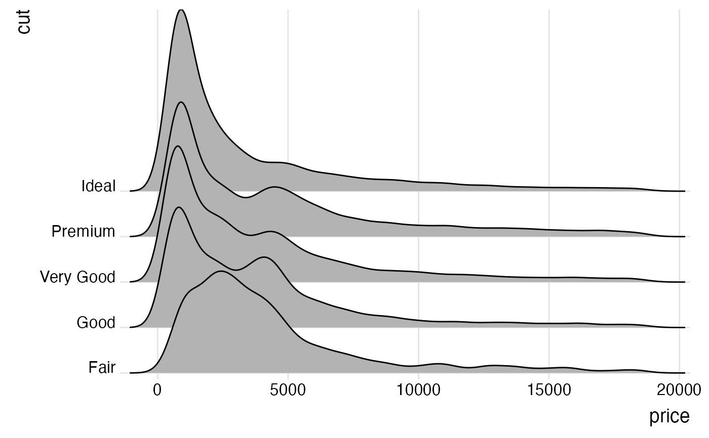

Create ridgeline plot
geom_density_ridges.Rdgeom_density_ridges arranges multiple density plots in a staggered fashion, as in the cover of the famous Joy Division album Unknown Pleasures.
geom_density_ridges( mapping = NULL, data = NULL, stat = "density_ridges", position = "points_sina", panel_scaling = TRUE, na.rm = FALSE, show.legend = NA, inherit.aes = TRUE, ... ) geom_density_ridges2( mapping = NULL, data = NULL, stat = "density_ridges", position = "points_sina", panel_scaling = TRUE, na.rm = FALSE, show.legend = NA, inherit.aes = TRUE, ... )
Arguments
| mapping | Set of aesthetic mappings created by |
|---|---|
| data | The data to be displayed in this layer. There are three options: If A A |
| stat | The statistical transformation to use on the data for this layer, as a string. |
| position | Position adjustment, either as a string, or the result of a call to a position adjustment function. |
| panel_scaling | If |
| na.rm | If |
| show.legend | logical. Should this layer be included in the legends?
|
| inherit.aes | If |
| ... | other arguments passed on to |
Details
By default, this geom calculates densities from the point data mapped onto the x axis. If density calculation is
not wanted, use stat="identity" or use geom_ridgeline. The difference between geom_density_ridges and geom_ridgeline
is that geom_density_ridges will provide automatic scaling of the ridgelines (controlled by the scale aesthetic), whereas
geom_ridgeline will plot the data as is. Note that when you set stat="identity", the height aesthetic must
be provided.
Note that the default stat_density_ridges makes joint density estimation across all datasets. This may not generate
the desired result when using faceted plots. As an alternative, you can set stat = "density" to use stat_density.
In this case, it is required to add the aesthetic mapping height = ..density.. (see examples).
Aesthetics
Required aesthetics are in bold.
xygroupDefines the grouping. Not needed if a categorical variable is mapped ontoy, but needed otherwise. Will typically be the same variable as is mapped toy.heightThe height of each ridgeline at the respective x value. Automatically calculated and provided bystat_density_ridgesif the default stat is not changed.scaleA scaling factor to scale the height of the ridgelines relative to the spacing between them. A value of 1 indicates that the maximum point of any ridgeline touches the baseline right above, assuming even spacing between baselines.rel_min_heightLines with heights below this cutoff will be removed. The cutoff is measured relative to the overall maximum, sorel_min_height=0.01would remove everything that is 1\ ridgelines. Default is 0, so nothing is removed. alphacolour,fill,group,alpha,linetype,size, as ingeom_ridgeline.point_shape,point_colour,point_size,point_fill,point_alpha,point_stroke, as ingeom_ridgeline.
Examples
library(ggplot2) # set the `rel_min_height` argument to remove tails ggplot(iris, aes(x = Sepal.Length, y = Species)) + geom_density_ridges(rel_min_height = 0.005) + scale_y_discrete(expand = c(0.01, 0)) + scale_x_continuous(expand = c(0.01, 0)) + theme_ridges()#># set the `scale` to determine how much overlap there is among the plots ggplot(diamonds, aes(x = price, y = cut)) + geom_density_ridges(scale = 4) + scale_y_discrete(expand = c(0.01, 0)) + scale_x_continuous(expand = c(0.01, 0)) + theme_ridges()#># the same figure with colors, and using the ggplot2 density stat ggplot(diamonds, aes(x = price, y = cut, fill = cut, height = ..density..)) + geom_density_ridges(scale = 4, stat = "density") + scale_y_discrete(expand = c(0.01, 0)) + scale_x_continuous(expand = c(0.01, 0)) + scale_fill_brewer(palette = 4) + theme_ridges() + theme(legend.position = "none")# use geom_density_ridges2() instead of geom_density_ridges() for solid polygons ggplot(iris, aes(x = Sepal.Length, y = Species)) + geom_density_ridges2() + scale_y_discrete(expand = c(0.01, 0)) + scale_x_continuous(expand = c(0.01, 0)) + theme_ridges()#>